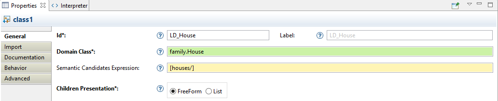
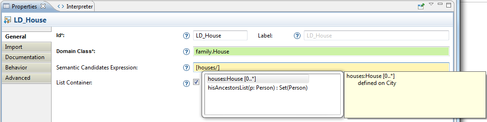

Specifying Viewpoints
-
Specifying Viewpoints
-
Introduction
-
Philosophy and Concepts
-
Viewpoint Specification Projects
-
Viewpoint Specification Models
-
Organization
-
Common attributes
-
Type Names
-
Interpreted Expressions
-
Model Operations
-
VSM Validation
-
Dynamic Development
-
Migration from Previous Versions
TODO Add a few screenshots to make the document less dry.
This document gives a general overview of how viewpoints are specified, tested and deployed.
Introduction
Sirius is a modeling tool which has been originally created in the context of complex systems modeling. The complexity of those systems makes necessary the collaboration of people with different concerns. For the same domain and on the same data, there are different levels of analysis, different roles and different concerns possible. Each of these correspond to a different
viewpoint on the same
domain model, and Sirius (the system) gives you all the tools to specify the viewpoints which are relevant to your business domain, whatever it is.
More pragmatically, Sirius assumes that you
domain model is defined using
EMF (Eclipse Modeling Framework), which is an industry standard with a rich eco-system. Many existing standards like UML (for software systems) or TOGAF (for Enterprise Architecture) have an implementation based on EMF. You can also easily define your own
Domain-Specific Model (sometimes called
Domain-Specific Language) to more precisely suit your specific needs and avoid unnecessary complexities. While this part (the domain specification) is not strictly in the scope of Sirius, the system provides a graphical modeler to ease the creation of your own
DSM (Domain-Specific Model).
Given such a domain model, which defines concepts and their relations in the abstract, Sirius will allow you to easily specify
concrete representations of these models. Representations can be diagrams, tables, matrices (cross-tables) or hierarchies (trees). You can define as many of them as you need, some more detailed than others, some customized for certain tasks or roles (e.g. initial design, review, certification, etc.). These representations are not just static: provided you specify the appropriate tools (see below), they can be complete modeling environments where users can create, modify and validate their designs. Representations can be logically organized in
viewpoints, and end-users can enable or disable viewpoints at will to work on the same model through different, but logically consistent, points of view.
The main strengths of the Sirius platform can be summarized as is:
- it is based on an open and widely used
industry standard (the Eclipse Modeling Framework);
- it can
adapt itself to any EMF-compatible DSM: it can use standards like UML if they suit your needs, but it does not force you to do so, and you can easily create your own DSM which can thus be simpler and better suited to your specific needs;
- it provides a
strong separation between the semantic models it manipulates, where your business value resides, and the representation models (which deal with, for example, the size and location of graphical shapes on a diagram). This means your domain models have no adherence to Sirius itself, and can be manipulate with any of the other tools in the EMF eco-system (e.g. Acceleo to generate source code or other textual artifacts);
- it allows you to define many
different representations on your domain models: diagrams, tables, trees, showing different levels of details and offering different edition capabilities depending on their usage;
- it is
easy to use and supports
very fast development. Once you become familiar with the tool, you will be able to get a simple diagram in a matter of minutes, a prototype suited for a client demonstration in a few hours, and a fully-functional and customized modeler in a few days of work;
- it is
extensible: by integrating in the Eclipse platform and offering open APIs, you can extend and integrate your Sirius modelers with other tools to provide a fully-customized modeling workbench to your users.
Philosophy and Concepts
As explained in introduction,
Sirius allows you to specify dedicated representations and associated tooling. As a
specifier, your role will be to configure the generic Sirius platform to provide these representations to your users. This is done by creating and configuring a
Viewpoint Specification Model
which describes the structure, appearance and behavior of your modelers. This document does not deal with the definition of your domain model; you can use a standard one like UML, SysML, BPMN or TOGAF, or create a custom one. The only assumptions Sirius makes is that your model is based on EMF.
The main concepts you will work with as a specifier are:
-
Viewpoint A viewpoint is one of the core elements that a specifier defines: it is a logical set of
representation specifications and
representation extension specifications.
-
Representation A
representation is a group of
graphical construction which represent domain data. A representation describes the structure, appearance and behavior of your modelers. By default, Sirius supports four kinds of representations (called
dialects): diagrams, tables, matrices (aka cross-tables), and trees. All follow the same basic principles in their definitions.
-
Mapping A
mapping identifies a sub-set of the semantic model’s element that should appear in a representation and indicates how they should be represented. Each dialect offers different kinds of mappings. For example, diagrams provide
container mappings, which can be used to represent semantic elements with graphical containers, where other elements (specified by other mappings) can appear. A mapping exists inside the
Viewpoint Specification Model, but on a concrete representation it will produce
instances. If you specify a container mapping to represent, say, divisions in an enterprise, and the model of your enterprise contains four divisions, a concrete diagram will show four containers, each an instance of the same mapping, but associated to a different semantic element.
-
Style Each mapping can have one or several
styles associated to it, which are used to configure the visual appearance of the elements they represent. For example, for diagram elements this would include their shape and colors.
-
Tool Without tools, your representations would be only visualizations, with no edition capabilities. While this can be sometimes useful, most representations will allow users to create, edit and delete elements. Tools are associated to mappings to describe their behaviors. Each kind of user interaction supported by
Sirius (e.g. creation or deletion, label editing, edge reconnection...) is specified by a different kind of tool, but they all follow the same principles in their definition.
Viewpoint Specification Projects
Note: When working as a Sirius specifier, it is recommended to use the
Sirius perspective, which provides some additional shortcuts and views. The
Modeling perspective is simpler and oriented towards end-users.
Viewpoints are specified as models (see below) inside
Viewpoint Specification Projects. These
VSPs
are normal Eclipse plug-in project, which happen to contain one or several
*.odesign files (the extension used for
Viewpoint Specification Models
). You can create such a project using the supplied wizard:
New > Viewpoint Specification Project.
By convention, the VSM (or VSMs) defined in your project are stored inside a
description folder. If you want to place them in a different location, make sure to add this location into the plug-in’s
build.properties so that it is included in the deployed version.
The
Viewpoint Specification Projects created by the default wizard are also Acceleo 3 projects. This is because inside a VSM you will need to write
model query expression, and the default language to do so is Acceleo 3. Being an Acceleo project means that you can easily add Acceleo files (
*.mtl) inside the project’s source to define complex or commonly used queries (but be sure to read
the Acceleo 3 section about how to properly deploy such plug-ins if you do).
Other than that, the project is a normal Java plug-in project. You can add
service classes into it if the query language you use support it, and any other Java code, including Eclipse views, actions, etc.
Important: Any VSM you place in the Eclipse workspace will be immediately available for use and testing, with no deployment. This is to facilitate dynamic and iterative development of viewpoints. However, when you
deploy your VSMs, they
must be part of a
VSP, and they
must be registered in the plug-in’s activator class. The activator generated by the
VSP wizard is properly configured, but if you rename your
VSM or add new ones, be sure to edit the activator class so that all your
VSMs are correctly registered inside the Sirius platform when deployed.
Viewpoint Specification Models
The core part of a
VSP is the
Viewpoint Specification Model (or models) it contains. These are stored in
*.odesign files, usually in the
description folder of the project. A
VSM specifies a set of
Viewpoints and their representations (diagrams, trees...).
To edit a
VSM, simply double-click on it, and a tree editor will open. The editor follows the conventions of standard EMF editors: selecting an element will show its properties in the
Properties view, where you can edit them. To create new elements, simply right-click on its parent and choose from one one the
New XXX menus. To delete an element and all its sub-elements, simply select it and hit the
Delete key or right-click and choose
Delete.
Organization
The top-level element of a
VSM is a
Group element. It has no specific semantics and serves only as a container for the other elements. Note however that once you define its
Name, you should never change it as it becomes part of the identification of all the elements inside the
VSM. If you change it, any concrete representations created using that
VSM will be broken.
Inside a
Group, you can create an optional
User Colors Palette, with shared
color definitions; this is useful to define a uniform color palette for all your viewpoints and representations. You can also, and more importantly, define
Viewpoint elements.
Besides its
Id and
Label (see below), a
Viewpoint can be associated to one or more
Model File Extensions, separated by space. This can be used to restrict the availability of the viewpoint only to modeling projects which contain semantic models of the specified types. For example, to make your viewpoint available to UML and SysML models, you can specify
uml sysml (note that the syntax specifies only the file extension,
uml, not a pattern like
*.uml). You can use a star,
*, to make your viewpoint available for
all models, but it is normally prefered be as specific as possible so as not to interfere with unrelated models and projects.
Inside a
Viewpoint element, you can create:
-
Representation Descriptions, for
diagrams,
sequence diagrams,
tables and cross-tables, and
trees.
-
Representation Extensions, currently supported only for
diagrams.
-
Validation Rules
, which will apply to all representations defined inside this viewpoint.
- And finally
Java Extensions. These refer (through its fully qualified name), to a Java class defined in the
Viewpoint Specification Project which defines
service methods and make these services available inside all the representations defined in the viewpoint. If you
use Acceleo 3 to write your expressions, you can also use these elements to declare Acceleo modules in the project that define MTL queries you want to use in your expressions.
Common attributes
Many of the elements used to specify viewpoint share some common configuration attributes. They are described in general terms in this section, and referenced from the specific element’s sections which used them (sometimes with additional details only relevant for this element).
-
Id: The mandatory identifier of the element. This identifier is mostly visible to the specifier in the description editor. It must be unique in the context of the viewpoint it is part of. The
Id is used internally to identify the element, and must be kept stable across different versions of the VSM (or it will make representations created with the old
Id unusable).
-
Label: The label of the element. It’s used to display this element to the end-user. By default, if this label is blank, the
Id is used to display this element to the end user. It can be changed with no impact on existing representation files.
-
Documentation: All the elements in a description file contain a
Documentation attribute available in the
Documentation category. This attribute can be used by the specifier to add comments and documentation to these elements. The content of this attribute is not visible to the end users of the viewpoints.
-
End-user documentation: This attribute describes this element for the end-user. It’s available in the
Documentation category. This attribute can be used by the specifier to add comments and documentation to these elements bounds for the end-user.
Type Names
Some
VSM elements will need you to specify one or more
Type Names to configure them, usually types from the semantic domain model being represented (for example the
Domain Class for mapping definitions). You can easily identify
Type Name fields by their green background in the
Properties sheet of an element.

use the
 icon to access the available fields tooltips:
icon to access the available fields tooltips:
-
Id field: The identifier of this element. Must be unique. Changing this identifier will break existing user models which reference the old identifier.
-
Label field: The label used to display this to the end-user.
-
Domain Class field: Type of the element represented by the Node.
-
Semantic Candidates Expression field: Restrict the list of elements to consider before creating the graphical elements. If it is not set, then all semantic models in session will be browsed and any element of the given type validating the precondition expression will cause the creation of a graphical element. If you set this attribute then only the elements returned by the expression evaluation will be considered.
-
List Container field: Tell whether the container will display it’s child as list elements or as shapes.
The syntax for type names can be the basic name, like
Class, a qualified name using name of the EMF EPackage which defines the type, like
uml.Class, or a fully qualified URI like
http://www.eclipse.org/uml2/3.0.0/UML#//Class.
Auto-completion is available in these fields using the
Ctrl+Space shortcut. It is recommended to explicitly associate a meta-model (or more) to your representations definitions to allow for smarter completion. Otherwise by default it will include all types from any EMF meta-model available.
Interpreted Expressions
Many
VSM elements require you to specify
Interpreted Expressions to configure them. These can be queries to select elements (as in mappings for example), or more general expressions to compute value (like the text to use for the elements' labels).
You can easily identify
Interpreted Expressions by their yellow background in the
Properties sheet of an element. For all such field, you can use any of the supported languages to write the expression. Refer to the
queries documentation for more details.

Model Operations
Whenever a
VSM requires you to specify a behavior, for example inside any
Tool definition, you can use any of the available
Model Operations to do so. Refer to the
Model Operations documentation for more details.
VSM Validation
It is possible to validate your
Viewpoint Specification Model
, to check that your Representations, Mappings and Tools are correctly specified. It will help you to find missing element or erroneous one (e.g. missing required expression).
To validate your VSM, open your
odesign file, right-click on the top-level
Group element and select
Viewpoint specification Editor > Validate. A dialog Box will appear and indicate if the validation succeeded. If not, it will give you details about the detected problems (click on the ‹details› button of the dialog box). If problems are detected, they will also be added to the Eclipse
Problems view. Double-clicking on one of these problems will select the concerned element in the
Viewpoint Specification Model
editor.
You can also validate one specific element by right-clicking on it in the
Viewpoint Specification Models
and launching the validation process. All the children of the selected element will be validated too. This fine-grained validation is useful to localize issues in the Specification Model, especially when it contains a lot of elements.
It is also possible to use the button , at the top right corner of the editor to launch the validation. This icon changes () when we change the VSM to encourage the user to validate the VSM before saving.
Dynamic Development
Sirius supports dynamic development of your
VSM with no need for deployment of your project to test it. If the domain model definition (the EMF meta-model plug-in) is installed in your development environment, and as long as your VSM does not use advanced features which require a deployment (like the definition of new
External Java Actions for example), you can test your representations while you are developing them. It is the recommended way to work, especially in the initial development phases, to easily experiment different approaches and see the results immediately.
To do this, simply create a modeling project in your development environment, alongside the Viewpoint Specification Project, and add a sample domain model to it. When you open the
Viewpoints Selection dialog on the sample project, you will see that all the viewpoints which are being developed in the same workspace are also made available, in addition to the ones installed as plug-ins. Select the ones you want and create sample representations.
Keep both your representations and the VSM that define them open at the same time. Whenever you change some definition or add new elements into your VSM, simply save it. Sirius will automatically detect the change, reload the new definition and apply it to your existing representations. This way you can develop your representations iteratively, for example starting from an empty diagram and adding more elements, styles and tools while and testing them immediately.
TODO Add a screenshot with both a VSM (on the left) and the corresponding diagram (on the right) opened at the same time. Make sure the «Model Explorer» is also visible to show both the VSP and the Modeling project they correspond to.
Note that Sirius does its best to take into account any change in the VSM, even for existing and opened representations. Sometimes, if the changes are too complex or in some corner cases not yet supported, you may need to close and reopen your representation, or in extreme case delete it and create a new one, in order to take the VSM changes into account properly.
Migration from Previous Versions
The
Viewpoint Specification Model can evolve between two versions of Sirius. The migration process is done automatically. That means all VSM are migrated at loading time without any action from the user. While a VSM is not saved, the automatic migration will be replayed at the next opening.